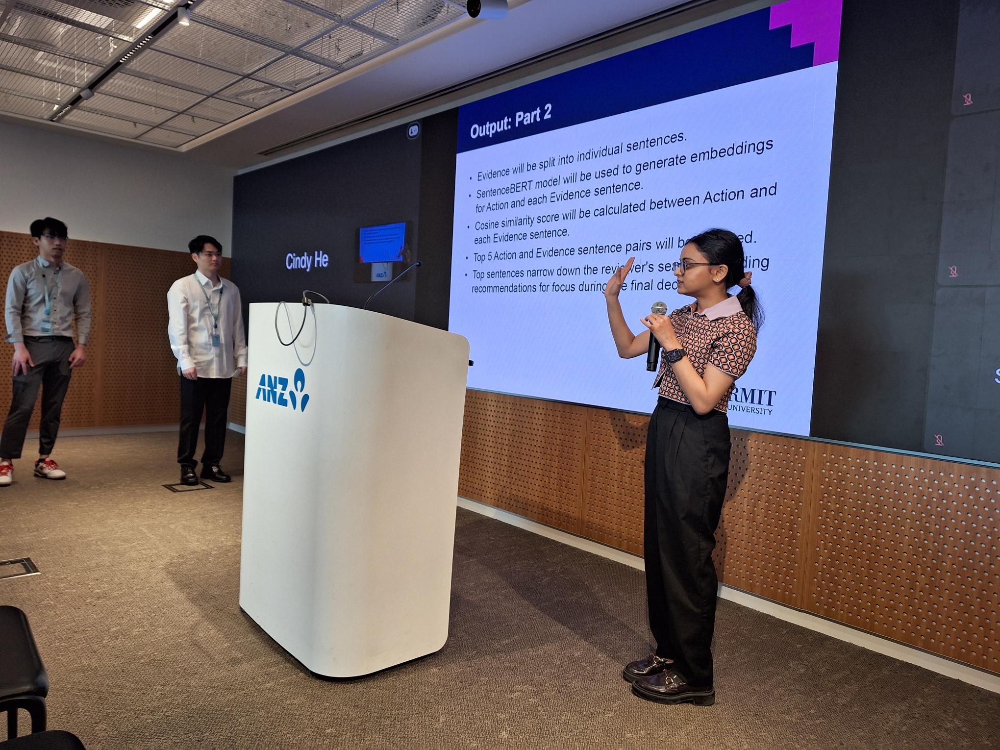
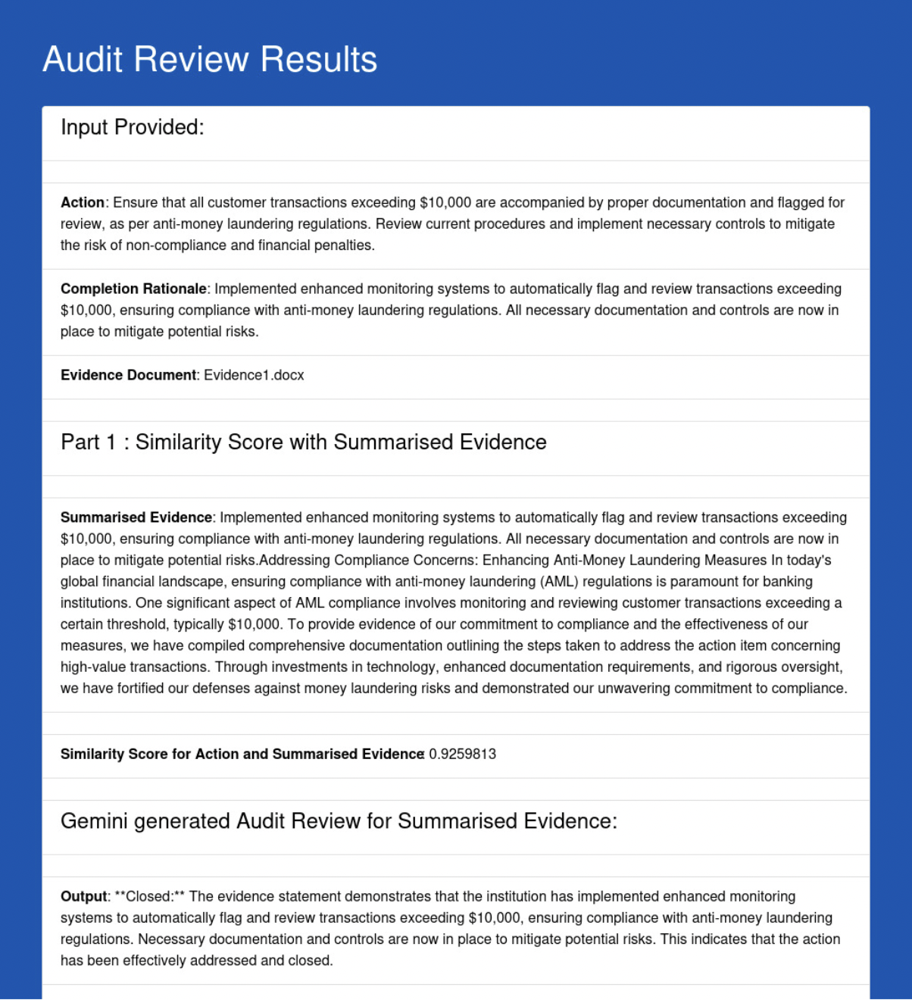
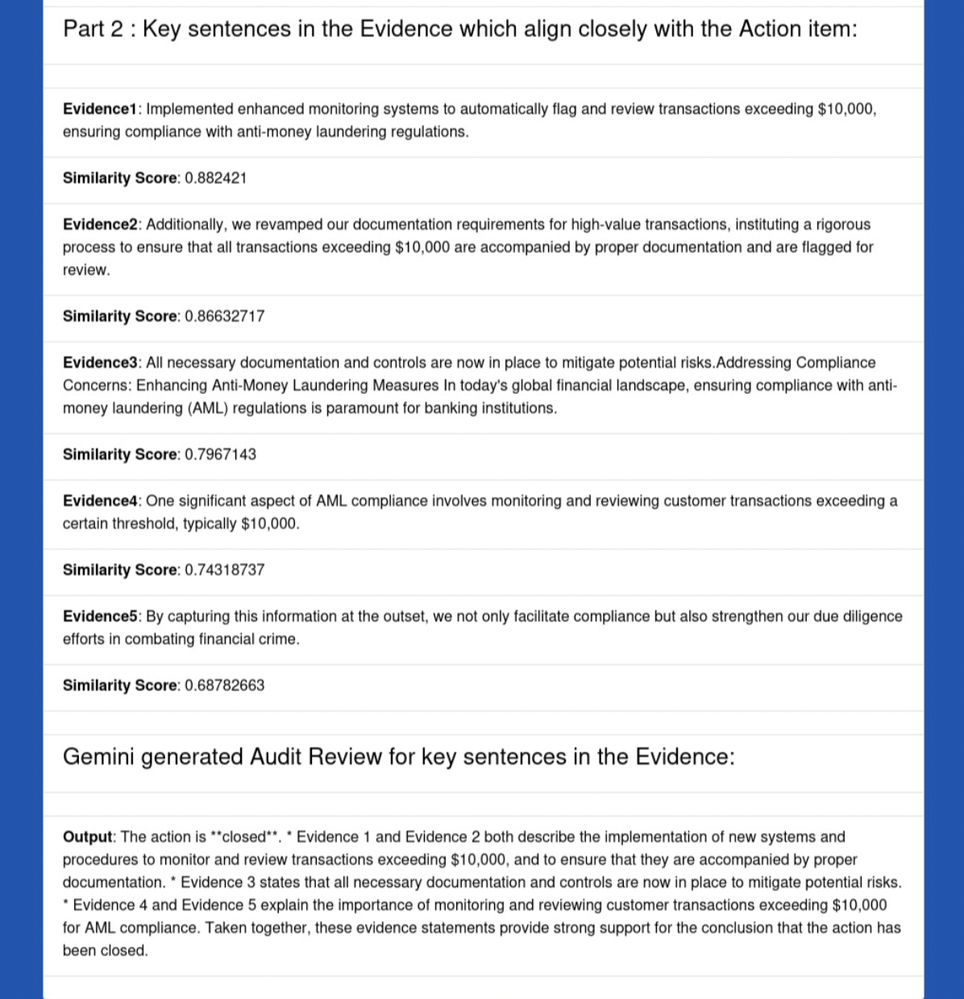

GenAI Integration in Bank Internal Audit

In the banking and finance sector, audit and compliance are crucial for maintaining regulatory standards and mitigating risks. Traditional manual auditing processes are often time-consuming and susceptible to human error. Our project aims to transform these processes by leveraging Generative AI (GenAI) to enhance efficiency and accuracy. This project, in collaboration with a leading multinational financial services company, focuses on developing a GenAI tool to streamline audit reviews. The tool evaluates audit action items against supporting evidence by analysing textual similarities using advanced machine learning techniques.
Our solution employs a pre-trained Sentence-BERT embedding model to compute cosine similarity scores between audit actions and corresponding evidence. By summarising extensive evidence data and pinpointing the most relevant sentences, our tool assists auditors in quickly identifying whether audit issues have been addressed effectively. The system also integrates Google Gemini for providing interpretative insights, aiding auditors in making informed decisions based on the AI-generated results.
The project's primary deliverables include a GenAI system that produces a general similarity score and highlights the top five evidence sentences with the highest contextual relevance to the action items. This approach not only accelerates the review process but also reduces the likelihood of oversight, ultimately contributing to improved audit efficiency and compliance in the banking sector.


Go to Project!